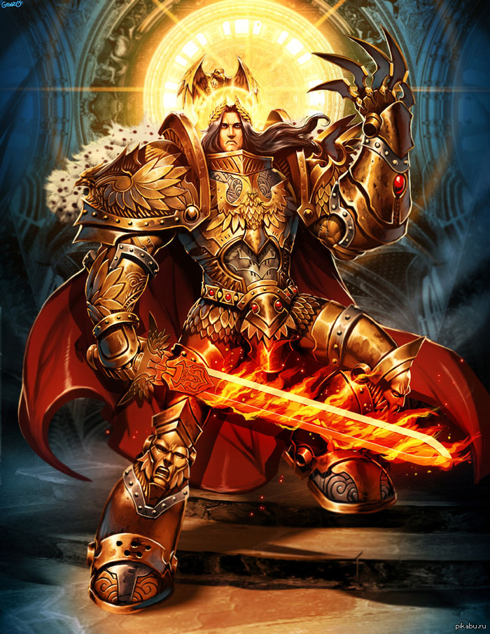

О временах задолго до основания Империума, когда человечество впервые колонизировало другие миры, известно немногое. Это время сегодня известно просто как Эра Тёмных Технологий. Даже среди высших эшелонов Адептус Терра и внутри монастырей-крепостей Адептус Астартес хранятся лишь немногие достоверные знания о временах, скрытых завесой суеверий и дремучих страхов. Сохранившиеся кошмарные знания и тёмные материи – это реликты забытых веков, столь горестных, что они закрыты от использования и ознакомления даже для их собственных сторожей. Жречество Марса прекрасно знает: как силы Хаоса нашёптывают из потусторонней пустоты, так и у грехов прошлого есть свои голоса, и могущество, которое они обещают, не менее опасно В те древние времена человечество достигло пика научного и технического развития. Добившись этого, человек шёл по галактике как завоеватель и исследователь, покорив территорию невообразимых размеров, шагая меж звёзд словно бог, повергающий бесконечно древние империи чужих и переделывающий бесчисленные планеты в миры, пригодные для обитания. Расцвет могущества длился недолго, и почти за одну ночь империя размером с галактику была повергнута в анархию, варварство и ужас. Варп-штормы поглотили колыбель человечества и Царство человека рухнуло. Долгие тысячелетия, пришедшие после, стали известны как Эпоха Раздора, и на эти долгие годы миры человека, закрытые пеленой ужаса и тьмы, оставались добычей демонов и чужаков, пока не пришёл Император-Спаситель.

Человечество издавно знало о варпе и сосуществовало с ним. Были индивидуумы, способные общаться с варпом и использовать его для различных целей — лекари в племенах, шаманы, предсказатели и другие духовные лидеры раннего человечества. Духи этих людей могли даже проноситься через варп после смерти и возрождаться в новых человеческих телах.Однако, с приобретением человечеством знаний, их тайные желания власти и удовольствий росли, и началось разложение. Духовные лидеры заметили начавшиеся изменения, когда их психические дары стали ослабевать и реинкарнация в новых телах становилась труднее. Существует древняя легенда о том, что они созвали великий совет, на котором было постановлено, что никто из них не сможет решить проблему в одиночку — но возможно вместе у них получится. Они решили, что принесут себя в жертву, дабы возродиться в качестве единого существа невообразимой силы. Однако поздние версии говорят что Император был создан искусственно в Эру Раздора, и, вступив в зрелый возраст, завоевал Землю. После этого он, с помощью техножрецов Марса, вновь открыл утраченные во время Эры Раздора технологии, усилил физические возможности элитных солдат (получивших название космодесант), собрал армию людей и начал экспансию в космос.

О жизни Императора до завоевания Терры и начала Великого Крестового похода почти ничего неизвестно. Некоторые легенды гласят, что Император все это время наблюдал за человечеством, время от времени появляясь в обличии величайших ученых умов и правителей, меняя судьбу Человечества и уберегая его от уничтожения. Как бы то ни было, официально неизвестно ни об одном деянии Императора до начала объединения Терры.
В ходе бурной эпохи, известной как Эра Раздора, шедшей После Темной Эры Технологий, Человечество утратило возможность безопасного путешествия по варпу, что привело к полному коллапсу и разобщению человеческой цивилизации. Тысячи миров, которые были колонизированы в Темную Эру Технологий, оказались покинуты и оставлены на произвол судьбы, отрезанные как от земли, так и от остальных колоний. Имматериум взволновался из за тысячилетнего Хаоса, и рождения Бога Хаоса Слаанеш, что ознаменовало распада Эльдарской империи и её конец. В это темное время, Терра уже не властвовала в Солнечной системе, в то время как правители Марса или Луны были доминирующими. Постепенно миры, населенные людьми, погрузились в кровавые междоусобные войны и раздоры, став легкой добычей для ксеносов. В течение этого долгого правления анархии, страха и насилия, Старая Земля была разделена на десятки враждующих государств так называемой техно-варварскими. Непрерывная война бушевала на поверхности Земли 2500 лет, начиная с конца 27-го тысячелетия. Мало что осталось от цивилизации Старой Земли, известной в славном прошлом как центр растущего человечества межзвездной цивилизации. Изчезла передовая наука, высокая культура и удивительные технологии. Техно-варварские вожди и их орды непрерывно воевали на планете. Они использовали химическое, биологическое и даже термоядерного оружие массового уничтожения, и медленно
превращали колыбель Человечества в унылый, пост-апокалиптический мир, тень от былого могущества. Это был темный период для людей Старой Земли, когда ими правили жестокие правители и деспотичные тираны. Именно тогда, на фоне угнетения, насилия и жестокости, Император Человечества впервые открыто явил себя людям Земли. В тайне, он появлялся в разные моменты человеческой истории, на протяжении тысячелетий, с тех пор как Эра Распри уничтожила то, что осталось от древней человеческой цивилизации. С его массивными армиями генетически улучшенных Громовых Воинов, первых прототипов Космического Десанта, которые состовляли костяк Императорской Армии, Император начал завоевание Земли с намерением объединить враждующие народы в единое планетарное правительство, а затем использовать Терру как плацдарм, с которого следовало начать объединение и посвященние людей в свет "Имперских истин" - официальную идеалогию прогресса и разума будущей Империи. Жестокие правители, такие как военачальник Калагаан из Урги, Кардинал Индонезийского Блока и другие тираны, окажутся за бортом истории. Некоторые техно-варварские государства всё же согласились помогать Императору.
В это время императором был создан ряд военных организаций, таких как Императорская Армия, которая должна была стать ядром вооруженных сил, которые могли бы поддержать его Легионы Астартес. Как и многие из этих ранних полков генномодифицированных солдаты были созданы за счет использования генной инженерии, разработанной в Императорских лабораториях под Гималаями и на Луне. Элитой Императорской армии стали так называемые "Воины Грома", чьи физические показатели были выше даже воинов Астартес, хотя они были спроектированы как жестокие убийцы, им не хватало многих благородных качеств. которые были у Астартес, а также их чрезвычайно долгой жизни. Громовые Воины были спроектированы только для войны на Терре и были ликвидированы после объединение Земли, ввиду некоторых деффектов в их генокоде, которые впоследствии были исправлены Императором при создании примархов и космических десантников. С помощью генной инженерии были созданы идеальные солдаты, более сильные и способные, чем любой из техно-варварских воинов. Воины, куда более могущественные, нежели обычные люди, будут продолжать служить императору и после завершения Войны за Терру. Эти воины в конечном итоге будут называться Старой Сотней, и образуют ядро начальной военной силы, которая приступит к объединению галактики и начнут Великий Крестовый Поход в начале 31 тысячелетия рядом с Космодесантом. Император понимал, что цена этого Объединения была невообразимо велика, и что в этих войнах было утрачено огромное колличество человеческих жизней и будет потеряно еще несоизмеримо больше.